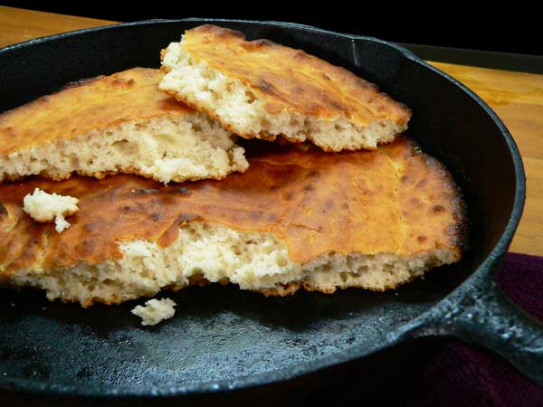

Ölandish frying pan bread

Description
A simple bread to supply nutrients for
raids and general pillaging. The only materials
needed are the ingredients below, a pan, and fire.
Ingredients
- 1 cup milk
- 1 tsp salt
- 2.5 cups feshly ground wheat flour
- 25 g yeast
Steps
- Mix all ingredients in a bowl
- Separate the dough into 10 pieces
- Roll dough out with a rolling pin
- Bake without fat on a pan over fire for 1-2 minutes per side
- Enjoy with fresh butter and
fish!